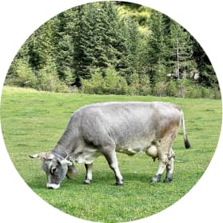

<section class="about section">
  <div class="container">
    <p class="about__label">tradition and love</p>
    <h2 class="about__title">how it’s made?</h2>
    <div class="pos-flex">
      <div class="about__img-wrapper">
        <picture>
          <source
            media="(min-width: 1200px)"
            srcset="
              ../images/desctop/cow-490.png          1x,
              ../images/about/desctop/cow-490@2x.png 2x
            "
          />
          <source
            media="(min-width: 768px)"
            srcset="
              ../images/tablet/cow-490.png          1x,
              ../images/about/tablet/cow-490@2x.png 2x
            "
          />
          <source
            media="(max-width: 767px)"
            srcset="
              ../images/mobile/cow-490.png          1x,
              ../images/about/mobile/cow-490@2x.png 2x
            "
          />
          
        </picture>
      </div>
      <div class="flex-1">
        <p class="about__text">
          Ice is a place where you will become not only a little happier, but
          also healthier. Health is the main value for us, and we follow it when
          creating our handmade desserts.
        </p>
        <p class="about__text--font-size">
          We use traditional recipes and 100% natural ingredients. Our products
          are so natural that they can be given to children from the age of
          three years. Sweets lovers can expect 55 types of ice cream, 15 types
          of coffee and 23 milkshakes. This is enough to choose ice cream and
          coffee for any mood!
        </p>
        <button class="about__read-more" type="button">
          Read more <span class="symbol">&gt;</span>
        </button>
      </div>
    </div>
  </div>
</section>
